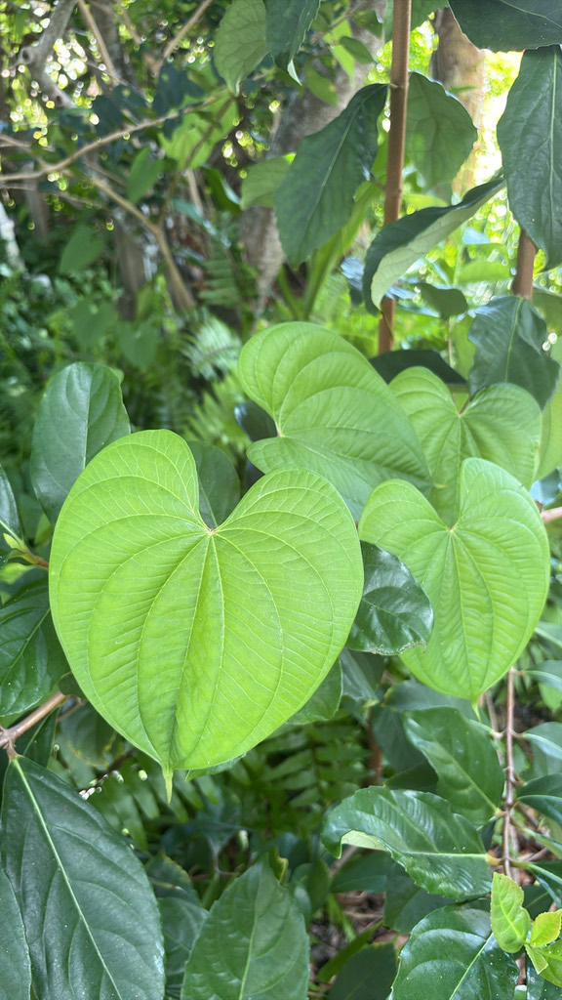

- A single vine can grow eight inches in a single day and top out at 65 feet — long enough to smother an entire cabbage palm from the ground up.
- Each vine produces over 300 bulbils in one growing season. Every one of them, even the tiniest, is capable of sprouting a new plant.
- The bulbils contain diosgenin, a compound used to manufacture synthetic steroids. The plant that is strangling Florida's hammocks is also a pharmaceutical ingredient.
- Florida's fix came from Nepal: a specialist leaf beetle discovered by USDA scientists was released starting in 2012 and has since been documented reducing air potato foliage by up to 70 percent at treated sites.
Native to tropical Asia and sub-Saharan Africa, air potato was spread across much of the South Pacific by ancient Polynesians long before Europeans arrived. It reached the Americas via the transatlantic slave trade, when African yams — including this species — were carried aboard ships as provisions.
It arrived in Florida in 1905 when botanist Henry Nehrling received a shipment from the USDA. He quickly recognized its invasive potential but did not eradicate it while he had the chance. Molecular studies published in 2011 confirm that Florida's population traces its origin specifically to China, not Africa.
- Air potato is one of the most aggressive vines in the Florida landscape. The aerial stems die back each winter, but the plant is far from dead — it overwinters in underground tubers and in the bulbils scattered across the ground, then relaunches in spring at a pace of up to eight inches per day. A single plant can produce over 300 bulbils in one season, each one capable of starting a new vine.
- The vine twines counter-clockwise and climbs without mercy — blanketing pinelands, hammocks, fencerows, and floodplain forests alike. It has been documented in all 67 Florida counties, from Escambia in the Panhandle to the Keys. Its dead vines even serve as a ready-made trellis for the following year's growth.
- The biocontrol story is one of Florida's more remarkable invasive-species chapters. USDA scientists searching for a natural enemy traced the Florida population's genetic origin to China, then found a highly specialized leaf beetle — Lilioceris cheni — in Nepal and China that feeds exclusively on air potato. After a decade of host-specificity testing, it was cleared for release in 2012.
- By 2015, beetle damage was confirmed at 86 percent of surveyed infestation sites statewide.
Air potato provides little meaningful wildlife value in Florida. Its flowers are small, inconspicuous, and rarely produced here — only female-flowered plants have been observed in the state, so seed-set does not occur. The dense vine mats it creates actually degrade habitat by smothering the native plants that birds, insects, and other wildlife depend on.
The one creature that has genuinely embraced air potato is the biocontrol beetle Lilioceris cheni — a specialist so narrowly focused that it will not complete its life cycle on any other plant found in Florida. In a real sense, the vine now feeds the very insect deployed to destroy it.
Primarily vegetative. New plants arise from aerial bulbils that drop in fall and sprout the following spring, and from underground tubers that persist even if aboveground growth is removed. Sexual reproduction via seed does not occur in Florida — only female-flowered plants have been found here.
Roundish to roughly 5 inches across, smooth-surfaced, forming in leaf axils from summer into fall. A single vine can bear over 300 bulbils in a season. Even the smallest bulbil is capable of sprouting a new plant.
Small, fragrant, and inconspicuous, borne in slender panicles or spikes up to about 4 inches long from leaf axils. Rarely seen in Florida. Only female-flowered plants have been documented in the state.
Spherical to oblong tubers form within the top few inches of soil. They store the energy needed to resprout each spring and can survive for extended periods even if the aboveground vine is cut or killed.
Stems are round in cross-section (not winged — a key ID point separating it from the similar winged yam, Dioscorea alata). Stems twine counter-clockwise. Leaves are broadly heart-shaped, alternate, up to about 8 inches long, with all major veins arising from the leaf base.
Look up: this vine drapes over shrubs and trees, and the big heart-shaped leaves with all veins radiating from the base are unmistakable. Then look for the bulbils — round, smooth, potato-like lumps tucked into the leaf axils, often clustered along a single stem.
Check the stem cross-section: it is round, not winged. Winged yam (Dioscorea alata) has prominent ridges along the stem corners; air potato does not. Both are invasive, but knowing which you are looking at matters for management.
The bulbils found on Florida vines are not safe to eat. Wild air potato bulbils contain toxic compounds and should not be consumed. Some cultivated varieties exist in Asia where bitterness is removed by extensive processing, but these are not the plants found in Florida. See toxicity for details.
Both the aerial bulbils and underground tubers contain toxic compounds including diosgenin, a steroidal sapogenin also used to manufacture synthetic steroids pharmaceutically. Ingestion of wild Florida bulbils can cause serious harm and should be avoided entirely.
The underground tuber (known as Huang-Yao-Zi in traditional Chinese medicine) has been documented to cause liver injury in people who consumed it chronically or in excessive amounts. Do not eat any part of air potato found in Florida.
The bulbils and tubers contain compounds toxic to animals as well as people. Dogs that ingest bulbils should be evaluated by a veterinarian. Keep pets away from fallen bulbils, which can litter the ground beneath an infestation in large numbers during fall.
Air potato is closely related to the true yams of West Africa (Dioscorea spp.) that are important food crops — but it is not one of them. The name refers to the aerial bulbils, which look like small potatoes dangling from the vine.
A second invasive Dioscorea grows alongside air potato in Florida: winged yam (Dioscorea alata), which has distinctively squared, winged stems. Both are invasive; the round stem is the fastest field distinction for air potato.
Florida residents can request air potato beetles (Lilioceris cheni) for release on their property through FDACS and UF/IFAS extension programs. The beetle is host-specific and safe for use around native Dioscorea species and garden plants.
- © Randall Carter (CC-BY-NC), via iNaturalist